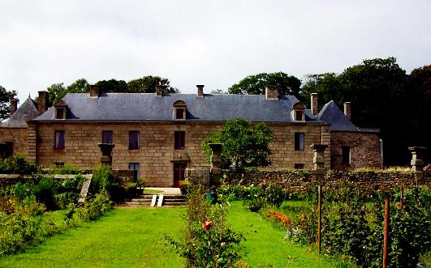
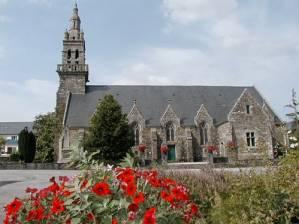
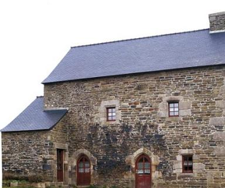
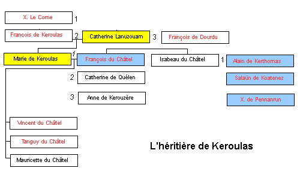

L'héritière de Keroulaz
The Heiress to Keroulaz
Dialecte de Léon
|
Cependant, la table B attribue le même chant, très répandu, à Marie Le Bris épouse Marrec . - Sous forme manuscrite : . fragment collecté par Mme de Saint-Prix et publié par Fréminville dans ses "Antiquités des Côtes du Nord", 1837, pp.387-388. On en trouve une copie chez Joseph Ollivier: MS 987, pp.221-228, intitulée "Pen-herez Keranglaz" (sans doute une confusion avec "Renée Le Glas" dont l'intrigue est très voisine). . par De Penguern t. 90, f°48-52 (publié dans "Gwerin 6, pp.55-58): "Penerez Keroullas" (Taulé, 1851); t. 111, 74: "Penerez Keroullas" (Plouigneau, 1848) . Par Lédan, Librairie de Morlaix, tome IV: "Pennerez Keroulas" (=Sevestre, "Les derniers Bretons"); texte et traduction pour l'enquête Fortoul: "L'héritière de Keroulas", t.2, n°32, pp. 708-710. . Par Luzel (nouvelles acquisitions françaises de la BNF 3342) "L'héritière de Keroulas" en trad. française (enquête Fortoul, tome II, N°64, p.802-804). - Publié dans des recueils: . par Luzel, dans "Gwerzioù 2", pp.130-137, "Penherez Keroulas (chanté par Marie Daniel à Duault); "Fragment de la même ballade" GW.2, pp.138-141 chanté par Pierre Gouriou, tisserand au Vieux-Marché, 1844. . collecté par Aymar de Blois (1760-1852) à Morlaix, en 1823, et publié par Fréminville dans ses "Antiquités du Finistère, Tome II", pp.203-208, Brest, 1835. - Publié dans un périodique : . en traduction, par M. Armand Du Châtelier de Morlaix, dans le "Lycée Armoricain XI" (1828). Note: les versions d'Aymar de Blois, Du Châtelier et Lédan sont pratiquement identiques et reproduisent sans doute une source unique. |
 Le Manoir de Keroulas (Commune de Brélès) |
However, table B ascribes the same very well known song to Marie Le Bris, wife of Marrec . - In handwritten form : . by Mme de Saint-Prix and published by de Fréminville in his "Antiquités des Côtes du Nord", 1837, pp.387-388. A copy thereof is found on Joseph Ollivier's MS 987, pp.221-228, under the title "Pen-herez Keranglaz", very likely as a result of a confusion with "Renée Le Glas" whose plot is rather similar. . by De Penguern t. 90, f° 48-52 (published in "Gwerin 6, pp.55-58): "Penerez Keroullas" (Taulé, 1851); t. 111, 74: "Penerez Keroullas" (Plouigneau, 1848) . by Lédan, IV : Pennerez Keroulas (=Sevestre, "Les derniers Bretons"); text and translation for Fortoul's inquiry: "L'héritière de Keroulas", book II, n°32, pp. 708-710. . by Luzel ("New acquisitions of French texts" by the French National Library, N° 3342) "L'héritière de Keroulas", a French version (Inquiry Fortoul, Book II, N°64, p.802-804). - Published in printed collections: . by Luzel, in "Gwerzioù, Book 2", pp.130-137, "Penherez Keroulas"(sung by Marie Daniel, at Duault); "Fragment of the same ballad" GW.2, pp.138-141 sung by Pierre Gouriou, weaver at Vieux-Marché, 1844. . collected by Aymar de Blois (1760-1852) in Morlaix, in 1823, and published by Fréminville in his "Antiquités du Finistère", book II, pp.203-208. - Published in a periodical : . in translation, by M. Armand Du Châtelier from Morlaix, in the "Lycée Armoricain XI" (1828). Note: the versions collected by Aymar de Blois, Du Châtelier and Lédan are practically identical and very likely derived from the same source. |
Mélodie -Tune
(Mode hypodorien)
| Français | English |
|---|---|
|
I
1. A Keroulaz une héritière Disputait des journées entières Des parties de dés enflammées Avec des enfants de haute lignée. 2. Cette année, point de réjouissance. Elle ne vit plus dans l'aisance, Car son père est mort maintenant. Il lui faut s'entendre avec ses parents. 3. - Les gens du côté de mon père Ne voient en moi qu'une héritière. Ils ne souhaitent que ma mort Pour ensuite hériter de mes trésors. - II 4. - L'héritière de Keroulaz Est heureuse aujourd'hui, ma foi: Elle est vêtue de satin bleu Et porte des fleurs d'or dans ses cheveux. 5. Et non plus les souliers lacés Qu'elle a coutume de porter, Mais bas bleus et souliers de soie, Comme il sied aux dames de Keroulaz.- 6. Dans la salle ainsi disait-on Quand elle parut au salon. Il y avait là le marquis De Mesle avec sa mère et ses amis. 7. - Je voudrais être pigeon gris Perché sur le toit du logis Pour savoir ce que dit sa mère A la mienne dans le plus grand mystère. 8. Je tremble de les voir ici. Ils viennent dans un but précis De Cornouaille. Ils ont flairé Céans une héritière à marier. 9. Malgré son bien, ce marquis-là Et son nom ne me plaisent pas. A Kerthomas va mon amour. C'est lui que j'aime et j'aimerai toujours.- 10. Soucieux était Kerthomas De voir ces gens à Keroulaz Car il chérissait l'héritière Et il disait en guise de prière: 11. - Je voudrais être un oiselet, Dans son jardin, sur un rosier. Quand elle irait cueillir des fleurs, Nous nous verrions. Grand serait mon bonheur! 12. Ou la sarcelle sur l'étang Quand elle lave ses draps blancs, Pour pouvoir mes deux yeux mouiller Dans l'eau qui vient clapoter à ses pieds.- III 13. Salaün, aussi, se présenta Ce samedi chez Keroulaz, Montant son petit cheval noir, Comme on avait coutume de le voir. 14. Frappant à la porte cochère, Il fut reçu par l'héritière, L'héritière qui justement Sortait porter du pain chez un mendiant. 15. - Chère héritière, dites-moi, Vos invités ne sont pas là? - Ils sont partis pour abreuver Les chiens, Salaün, allez donc les aider! 16. - Ce n'est pas pour soigner les chiens Qu'à Keroulaz, ce soir, je viens, Mais bien pour vous faire la cour, Héritière, et vous dire mon amour.- IV 17. Ce jour-là, la jeune héritière Disait à Madame sa mère: - Depuis l'arrivée du marquis, Mon cœur est brisé, mon esprit meurtri. 18. Mère, ne soyez pas cruelle! Ne me donnez pas à de Mesle, Mais bien plutôt à Pennanrun, Ou bien à la rigueur, à Salaün! 19. Ou bien encore à Kerthomas. C'est lui le plus gracieux, je crois. Il vient ici depuis toujours Et vous le laissez me faire la cour.- 20. - Kerthomas, votre avis loyal: Vous revenez de Châteaugal? - J'y suis allé, c'est bien certain, Mais n'ai dans ce château rien vu de bien. 21. Non, de bien je n'ai rien trouvé. Qu'un méchant manoir enfumé, Des croisées qu'on ne peut fermer, De grandes portes prêtes à tomber. 22. Une horrible salle fumante Et une vieille grisonnante Pour ses chapons hachant du foin Car, de l'avoine, elle n'en avait point. 23. - C'est un mensonge, Kerthomas! Le marquis est un potentat. Ses portes sont d'argent brillant Et ses fenêtres d'or étincelant. 24. Celle-là serait honorée Qui par lui serait épousée. - Moi je n'y vois honneur aucun, Ma mère, moi qui ne demande rien. - 25. - Fille, un autre ton, s'il vous plait! Je ne veux que votre intérêt. La chose est faite et j'ai promis Que vous alliez épouser le marquis.- 26. Si la dame de Keroulaz Avait dit cette phrase-là, C'est que son cœur était jaloux Et convoitait Kerthomas pour époux. 27. - J'ai de Kerthomas un anneau, Un jonc d'or qui porte son sceau. Je l'ai pris. J'avais le cœur gai. C'est en pleurant que je le lui rendrai. 28. Reprends-donc, ton bel anneau d'or, Et ton sceau! Prends ta chaîne encor! Car je ne puis plus t'épouser, Ni conserver ce que tu m'as confié. - V 29. Cruel celui qui fût allé A Keroulaz et n'eût pleuré Voyant la malheureuse enfant Qui se tenait au chambranle en sortant! 30. - Adieu, manoir de Keroulaz! Adieu, seuil que je passe, hélas! Adieu, mes voisins que j'aimais Car je ne vous reverrai plus jamais! 31. Et les pauvres de la paroisse Pleuraient, le cœur serré d'angoisse. - Amis, tous vos pleurs me font mal! Venez plutôt me voir à Châteaugal! 32. Mes aumônes seront les mêmes: Vous aurez trois fois par semaine, Par charité, dix-huit quartiers D'orge, ou bien alors d'avoine ou de blé.- 33. Le Marquis de Mesle disait, A sa jeune épousée:- Cessez De divaguer comme cela! Je crains que mes biens ne suffiront pas! 34. - De vos biens je suis économe Et sans eux je ferai l'aumône Pour qu'on prie toujours et encor Pour nos âmes, lorsque nous seront morts.- VI 35. L'héritière au bout de deux mois Passés à Châteaugal manda Les services d'un messager: - J'ai, pour ma mère, une lettre à porter! - 36. Et un jeune page s'offrit Aussitôt pour porter le pli: - Écrivez donc quand vous voudrez. On vous trouvera bien un messager. 37. Elle écrivit donc une lettre Que le page se vit remettre Avec ordre de la porter A sa mère, à Keroulaz, sans tarder. 38. Lorsque la lettre lui parvint, Cette dame était au jardin Avec des nobles du pays Et Kerthomas était parmi ceux-ci. 39. Après qu'elle eut lu cette lettre, Elle dit à Kerthomas : - Faites Vite seller votre cheval! Nous partons cette nuit pour Châteaugal! - 40. Quand de cheval on descendit, Madame de Keroulaz dit: - Qu'y a-t-il ici de nouveau Qu'on ait tendu ce dais, ces noirs rideaux? 41. - C'est l'héritière qui rendit A Dieu son âme cette nuit. - Si l'héritière est décédée, C'est moi, c'est nulle autre qui l'ai tuée! 42. Combien de fois me disait-elle: "Oubliez le Marquis de Mesle! Donnez-moi donc à Kerthomas! Il serait le meilleur parti pour moi."- 43. Kerthomas et la pauvre mère, Frappés de cette perte amère, Se sont consacrés à Dieu, Au fond de cloîtres pour la vie, tous deux. trad. Ch.Souchon (c) 2003 |
I
1. The heiress to Keroulaz spent Hours, playing to her heart's content Enthralling, joyful games of dice With noble children and found it so nice. 2. But she has ceased playing this year, Her fortune has made her austere. She's as a rich fatherless child By her relatives with falsehood beguiled. 3. - My kith and kin on the spear side Never have wished that I would thrive; All of them hope that I should die, Look on my fortune with a jealous eye.- II 4. - The heiress has a happy smile. Will have tonight a joyful time! She wears of white satin a dress A gold flower adorns of her hair each tress. 5. The plain lace-up shoes are not there That the poor girl is used to wear, But shoes of silk and stockings blue, For a rich heiress a becoming hue.- 6. So said all people in the hall, When they saw her come to the ball. Marquis of Mesle also had come With a large retinue lead by his mum. 7. - I wish I were, upon the roof, A grey dove there staying aloof. What's being devised I could divine Between the Marquis's mother and mine. 8. At what I see now I must grieve. Without a motive would they leave Their Cornouaille den? They think I'm sure An heiress though rich could marry a poor. 9. In spite of his wealth and his name, This Marquis won't my heart inflame. Kerthomas I have loved before, And I want to love him for ever more. - 10. Kerthomas also was afraid Of all the people that there stayed. He was with the heiress in love And often said, so sure he was thereof: 11. - A nightingale if I could be In her yard, upon a rose tree! Whenever she would pick some flowers, This moment of intense delight were ours! 12. I wish I were one of those teals On the pond where her things she cleans, I would wet with water my eyes That comes and laps where her little foot lies.- III 13. Salaün, too, did there alight Late on the same Saturday night. On his small horse's back riding. As he used to do, he came that evening. 14. As he knocked on the outer door, The heiress opened to him, for She was then just going out, to Bring some food to a poor man whom she knew. 15. - Dear heiress, would you let me know, Whither did all the party go? - They have led the dogs to the pond. Salaün, go there quickly; lend a hand! 16. - But it was not to water dogs That I came, nor to watch the frogs, I came to your house to woo you, That's why to me you should be kinder, too.- IV 17. The heiress on that day of dread Went to her mother and she said: - That Marquis! Since he's dwelling here, My poor heart is full of sorrow and fear. 18. O mother dear, I beseech ye, Don't to the Marquis marry me; Rather give me to Pennanrun, Or, if you rather like, to Salaün. 19. Kerthomas were not a bad choice. At it my heart would most rejoice. To come here often he was free. You did not object to his wooing me.- 20. - Tell me, have you, Lord Kerthomas, Ever been in Châteaugal house? - Yes I have been there but, truly, Nothing much good to report did I see. 21. No, I saw there nothing much good: A hearth where burned sparse, reeking wood. Windows that were devoid of panes And tottering doors that off their hinges came. 22. An old hall that was filled with smoke While a hag, old and hoary poked, And she chopped hay to feed her hens, Because she had got no oats to give them. 23. - I don't believe you, Kerthomas. The Marquis is a moneybags. His doors, as if of silver, glare. His windows, as if of glittering gold, flare. 24. And that the Marquis should woo her She must consider an honour. - Without this honour I can do My mother I don't request it from you. - 25. - Daughter, you're in a nasty mood. I want nothing but your own good. I gave my word. Clinched is the deal. And you shall marry the Marquis of Mesle.- 26. The Lady Keroulaz had said These strong words to the hapless maid, Because she was jealous of her, Wished to have Kerthomas for her lover. 27. - Kerthomas gave me a gold ring, As well as a seal for stamping; When I received them I was gay. But I'll whine when I must give them away. 28. Kerthomas, take back your gold ring, Your seal and all your golden things; I'm not allowed to marry you I dare not keep them. To you they are due! - V 29. Cruel-hearted were whoever had Come to Keroulaz and not cried, Seeing the poor heiress shedding tears And kissing the door when leaving from here. 30. - Farewell, dear house of Keroulaz, No more shall you see me, poor lass, All my beloved neighbours, farewell. For I shall never come back here to dwell! 31. And the poor of the parish cried While to console them all she tried; - My friends, you need not fear and cry; But come and visit me at Châteaugal. 32. For I shall give alms every day; Three times a week, a charity Of eighteen full quarters of wheat, Of oats or of barley a real treat.- 33. But the Marquis of Mesle did scold His young wife who such nonsense told. - I must forbid you to do so, Or my small good with all your alms will go! 34. - Lord, I shan't give your gold away Yet, I shall give alms every day And they shall pray, that you and I, To Heaven may be taken when we die. - VI 35. The heiress who from then on stayed At Châteaugal one day has said: I need someone above all things Who would to my mother a letter bring. - 36. A young page who listened to her, Gave to the Lady this answer: - Your letter write, my Lady, do, And I shall find a messenger for you. 37. As soon as the message was writ, To the same young page she gave it: - Do not delay and leave at once Give it to my mother, at Keroulaz. - 38. When to her it was handed out, Her mother was giving a rout To noble people and there was Among them also the lord Kerthomas. 39. After the letter she had read, She turned to Kerthomas and said: - Our horses must be saddled now, For to Châteaugal tonight we must go!- 40. The Lady Keroulaz she called When she arrived at Châteaugal: - Does someone know the reason for This black canopy hanging o'er the door? 41. - The heiress, to tell you the truth, During the night her last breath drew. - The one who made the heiress die, Certainly the one who killed her was I! 42. For I remember how she said: Marquis of Mesle I should not wed. Rather give me to Kerthomas Who is to me, to be sure, the best match.- 43. Kerthomas and the poor widow Who were hit by this severe blow, Ceased living as husband and wife, Spent in dark cloisters the rest of their lives. transl. Ch.Souchon (c) 2003 |
Cliquer ici pour lire les textes bretons (versions imprimée et manuscrite).
For Breton texts (printed and ms), click here.

|
 RésuméForcée par sa mère, en 1565, d'épouser le Marquis de Mesle, François du Chastel (mort en 1590) qui fut préféré à deux autres seigneurs du pays, Kerthomas, un cadet de la maison de Gouzillon et Salaün, l'héritière serait morte de chagrin, si l'on en croit cette complainte. En réalité elle eut le temps d'avoir trois enfants de son mariage avec de Mesle, lequel laissa le souvenir d'un avare et d'un lâche. Comme Geneviève de Rustéfan , Marie de Keroulaz est une femme énergique et fidèle jusqu'à la mort à un amant inconstant, qui, ici, balance entre la mère et la fille comme dans une nouvelle de Gobineau (ou de Françoise Sagan!) L'importance de ce chant dans l'histoire des collectes La Villemarqué indique dans l'argument que cette ballade fut "découverte" par Marie, la fille d' Aymar de Blois de la Calande (1760 -1852), mais que la version qu'il publie lui "a été chantée par une paysanne de la paroisse de Nizon." M. Donatien Laurent (dans son étude «Aymar I de Blois (1760-1852) et « L’héritière de Keroulas», incluse dans "Bretagne et pays celtiques. Langues, histoire, civilisation. Mélanges offerts à la mémoire de Léon Fleuriot", 1992, pp. 415-443)attribue cette découverte au père de Marie, cet ancien capitaine de vaisseaux morlaisien qui avait participé à la création de l'Académie celtique dès 1805. Il avait découvert, dans les années 1820, chantée par les femmes du hameau de Launay en Ploujean, où il avait son manoir, la ballade de l' héritière de Keroulas (en Léon) mariée contre son gré au marquis de Mesle, vers 1575. Il la transcrivit, la traduisit et la publia en 1823, assortie de commentaires, dans une brochure d'une vingtaine de pages. Il fut bientôt imité par d'autres collecteurs passionnés: Armand du Châtelier qui publie le même texte dans la revue "Le Lycée armoricain" en 1826; et Emile Sevestre qui publie un article où ce chant figure, avec quatre autres dans la "Revue des Deux Mondes" en décembre 1834. Le chevalier de Fréminville (1787-1848) utilise ses propres publications pour diffuser la poésie populaire: dans ses "Antiquités du Finistère", en 1835, l' héritière de Keroulas en deux langues, assortie de l'argumentation d'Aymar de Blois (le même chant sera publié l'année suivante par Le Gonidec , dans les "Mémoires de la Société des Antiquaires de France", pour corriger les erreurs relevées dans le texte breton). Puis en 1837, dans ses "Antiquités des Côtes-du-Nord", une seconde version de "l'Héritière", collectée, celle-ci, par Madame de Saint-Prix . On voit par là que publication de ce chant en 1823 marque le début du mouvement de collecte de la poésie orale bretonne (le premier chant collecté , étant, de l'avis de La Villemarqué, La Fontenelle ). Ce texte consiste essentiellement en un chant amébée entre l'héritière et un seigneur de La Ronce, qui est ici substitué à de Mesle: chacun surenchérit sur les fanfaronnades de l'autre et l'héritière, dévoilant ses sentiments profonds, termine en vantant les fastes du château de Kerthomas que son interlocuteur décrivait comme un bouge. Les archives du château de Keroulas Gaston de Carné , dont un ancêtre est cité dans la gwerz Elégie de M. de Nevet , a étudié les archives du château de Keroulas pour préciser l'identité des personnages qui interviennent dans la présente complainte ("L’héritière de Keroullas », Revue historique de l’Ouest, 1887, pp. 5-24). Salaün, le second prétendant, était, selon Gaston Carné, le fils du seigneur de Coatenez en Plouzané. Quant à Pennanrun son identité n’a pas été découverte. |
 RésuméForced by her mother, in 1565, to marry the Marquis of Mesle, François du Chastel (d. 1590) who was preferred to two other noblemen of the neighbourhood, Kerthomas, cadet of the Gouzillon family, and Salaün, the heiress died of grief according to this ballad. In fact she lived long enough to have three children of her union with de Mesle, but the latter is really remembered as a miser and a coward. Like Genevieve of Rustéfan , Mary of Keroulaz is depicted as an energetic woman who remained to the death faithful to a fickle lover hesitating, here, between mother and daughter, a theme we find in novels by Gobineau (or Françoise Sagan!) Importance of this song in the development of the collecting movement In the "argument", La Villemarqué states that this ballad was "discovered" by Marie, daughter to Aymar de Blois de la Calande (1760 - 1852), but that he learned from the singing of a Nizon country woman, the version he publishes in the Barzhaz. M. Donatien Laurent (in his essay on «Aymar I de Blois (1760-1852) et « L’héritière de Keroulas» in "Bretagne et pays celtiques. Langues, histoire, civilisation. Mélanges offerts à la mémoire de Léon Fleuriot", 1992, pp. 415-443) ascribes this discovery to Marie's father, a retired Morlaix merchant navy captain who took part in creating the Celtic Academy in 1805. He had learnt, in the 1820ies, of the singing of women from the hamlet Launay near Ploujean, where he had his manor, the ballad of the Heiress to Keroulas-in-Léon who was married off to Marquis of Mesle, ca 1575. In 1823, he committed it to writing and published it, along with a translation, the whole filling but a score of pages. His example was soon followed by others: Armand du Châtelier who published the same text in the periodical "Le Lycée armoricain" in 1826; and Emile Sevestre who printed an article containing this song along with four others in the "Revue des Deux Mondes" in December 1834. The chevalier de Fréminville (1787-1848) availed himself of his own publications to broadcast popular lore: in his "Antiquités du Finistère", in 1835, the Heiress of Keroulas in two languages, accompanied by the comments by Aymar de Blois (the same song was to be published the next year by Le Gonidec , in the "Mémoires de la Société des Antiquaires de France", with a view to amending faulty passages in the Breton text). Then in 1837, in his "Antiquités des Côtes-du-Nord", a second version of the "Heiress", collected by Madame de Saint-Prix . Anyway, we may date from the publishing of this song in 1823, the surge of enthusiastic collecting of oral Breton poetry (but the first collected song, was, in La Villemarqué's opinion, La Fontenelle ). It mostly consists in an amoebean contest between the heiress and a suitor, the Lord of La Ronce ("Bramble patch", the name given here to Marquis Mesle), who try to outmatch each other with bragging assertions. The heiress unveils her true feelings when she at last describes Kerthomas' dwelling place as a sumptuous palace, which her antagonist had depicted as a hovel. The archives of Keroulas Castle Gaston de Carné , whos ancestor is quoted in the gwerz Lament for M. de Nevet , investigated the archives of Keroulas castle with a view to identifying the protagonists in the lament at hand ("The heiress to Keroullas » in "Revue historique de l’Ouest", 1887, pp.5-24). Salaün, the second suitor, was, so wrote Gaston Carné, a son of the Lord Coatenez (near Plouzané). As for Pennanrun no particular could be found to identify him. |

Versions du Manuscrit de Keransquer et Fréminville
Keransquer MS and Fréminville Versions
| Français | Brezhoneg | English | English |
|---|---|---|---|
|
Les deux fragments notés par La Villemarqué dans le premier carnet de Keransquer ne constituent qu'une source secondaire au regard des versions de cette ballade publiées antérieurement à la parution du premier Barzhaz. C'est ainsi que la version publiée en 1835 par
Christrophe-Paulin de Fréminville
dans ses "Antiquités de la Bretagne" , Finistère, Volume 2, pages 203 et ss. que l'on trouvera ci-après, lui a fourni 30 des 43 quatrains qui constituent son poème.
Manuscrit de Keransquer Les éléments principaux tirés par le jeune barde de ses propres notes sont: Anez kaout koñje ho kerent (A moins d'avoir l'autorisation de votre famille) - Vit ma c'herent a-berzh va zad (Pour ce qui est de ma famille du côté de mon père) Biskoazh n'o-deus karet va mad! (Jamais elle n'a recherché mon intérêt!) "Ce n'est pas des souliers à lacets que l'héritière a l'habitude (boaz) de mettre mais des souliers de soie et des bas bleus" " La confusion entre Keroulas et le château de François de Mesle (maner Melz), se poursuit aux strophes suivantes, où la mère de l'héritière prend la défense de De Mesle: "(23) Tu dis un mensonge, Kerthomas, car les choses sont tout autres à Keroulas ; Il y a une salle dorée jusqu'au sol..." "(26) La dame de Keroulas parlait ainsi à l'héritière, (b) car elle aimait aussi Kerthomas, et elle l'aimait d'amour véritable. (26.3). Parce qu'elle avait des "chenilles" (de la gangrène) dans le cœur et désirait que Kerthomas fût son amant." Fréminville ajoute "Si [...] la France possédait un Walter Scott, cette ballade pourrait devenir le texte d'un charmant roman historique, en lui donnant surtout la couleur locale et le costume de l'époque." . 
Version Fréminville C'est peut-être ce qui a incité La Villemarqué à pratiquer les modifications que l'on notera en comparant son texte avec celui de Fréminville (signalées en caractères gras). Elles ont consisté essentiellement à remplacer les mots d'origine française par des mots bretons . Cette stophe devient (couplet 12): "J'aimerais être la sarcelle sur le lac où elle lave ses vêtements pour mouiller mes yeux dans l'eau qui mouille ses pieds ". M. Donatien Laurent indique dans son étude citée plus haut (p. 434) qu' Aymar de Blois voyait sa "délicatesse française" choquée par cette phrase. L'élite cultivée du XIXème siècle n'appréciait plus certains modes d'expression et certaines formes de sensibilité propres à la littérature orale populaire comme le faisaient ses ancêtres trois siècles auparavant. |
Ballade recueillie par M. de Blois de la Calande et publiée par de Fréminville dans ses "Antiquités du Finistère", Volume II
1.(4) Ar benn-herez a Geroulas Rag he-deus ur plijadur bras Da zoug ur zae satin glas Pa ra gant aotrounez dansañ! 2.(6) Evelse e gaosed er zal Pa zeue ar benn-herez er bal, Rag markiz Mezl voa erruet Gant e vamm hag un heul bras-meurbet. 3.(7) - Me garfe bezañ goulmig glas War an doenn e Keroulas Evit kleved ar gomplidi Etre e vamm ha va hini. 4.(8) Me a grenn gant ar pezh a welan Neket heb ur soñj int deuet amañ Deus-a Gerne, pa zo en ti Ur bennherez da zimeziñ. 5.(9) Gant e madoù hag e anv brudet Ar varkiz-se din ne blij ket. Mez Kerthomas deus a-bell zo A garan ha garin atav. - 6.(10) Enkrezet oa ivez Kerthomas Gant tud-se deuet e Keroulas, Rag eñ a gare ar benn-herez Hag oa klevet o lared aliez: 7.(12) - Me garje bea ur grak-houad War al lenn e walc'her he dilhat Evit glebiañ va daou-lagat Gant an dour demeus he dilhat! - 8.(17) Ar bennherez a lavare D'he mamm itron: - Eus en deiz-se Ma z'eo erru markiz Mesl amañ A lakas va c'halon da rannañ. 9.(18) Va mamm iton, ha me ho ped, D'ar varkiz Mezl n'am roit ket, Da va reiñ kent da Penn-an-Run, Pe mar karit da Zalaün. 10.(19) Va roit kentoc'h da Gerthomas. Hennezh en-deus ar muiañ gras. En ti-mañ eñ zeu aliez, Hen a lezec'h din ober al lez. 11.(20.3) E Gastell-Gall me a zo bet. (21.1) Mad, m'hen toue, n'em-eus gwelet (21.2) Nemed ur gozh zal vogedet (21.3) Hag ar prenestroù hanter-torret. 12. E Kerthomas me a zo bet Madoù awalc'h em-eus gwelet: (23.3) An norojoù zo arc'hant gwenn; (23.4) Ar prenestroù eus aour melen. 13.(25) - Va merc'h, ankounit an holl-se. Tra, kent ho mad, n'a zalc'han-me. Roet ar gerioù, an dra zo graet D'ar varkiz Mezl viot dimezet. 14.(27) - Ur walen aour hag ur signet Gant Kerthomas oent din roet. O c'hemeriz en ur ganañ Hag o restolin en ur ouelañ. 15.(28) - Dalit, Kerthomas, ho kwalen aour, Ho signet gant karkanioù aour; Na ven ket lezet o kemered, Mired ho re ne zlean ket. - 16.(29) Kriz vije 'r galon na ouelje, E Keroulas, neb a vije O weled ar benn-herez kaez O poked d'an nor paz'eas er-maes. 17.(30) - Adieu , ti bras Keroulas, Biken ennoc'h ne a rin pas! Adieu, va amezeien kaes! Adieu, bremañ, ha da jamez ! - 18.(31) Peorien ar barez a ouelje Ar benn-herez o gonsole : - Tavit, peorien, na ouelit ket! Da Gastell-Gall deuit d'am gweled. 19.(32) Me a roy aluzenn pep deiz, Teir gwech ar sizhun ha ray charite Triwec'h palevarz a winiz, Hag heiz ha gerc'h ivez a roy. 20.(33) Ar varkiz Mezl a lavare D'he gwreg-nevez pa he gleve: - Evit pep deiz ne rofet ket Rag va madoù ne badfent ket. 21.(34) - Markiz Mezl, heb kaout ho re Me royo aluzenn pep deiz, Evit dastumed pedennoù Goude vimp marv, d'hon eneoù. - 22.(35) Ar benn-herez a lavare E Kastell-Gall pa errue Ha ne kase ket ur mesajer Da gas d'he mamm ul lizher. 23.(36) Ur paj yaouank a respontas D'ar penn-herez pa he glevas: - Skrivit lizheroù, pa garfet, Mesajerien a vo kavet. - 24.(37) Koulskoude ul lizer a skrivas Ha d'ar paj e-berr a roas Gant gourc'hemennoù vit he kas Raktal d'he mamm e Keroulas. 25.(38) Pa erruet al lizher ganti Hi a voa er zal o ebatiñ Gant lod a noblañs eus ar vro Ha Kerthomas voa ivez eno. 26.(39) Pa 'n-devoa he lizher lennet, Da Gerthomas hi a laret: - Likit da zibrañ kezeg afo ! Da Gastell-Gall a ean fenoz. - 27.(40) Itron Keroulas a goulenne E Gastell-Gall pa errue: - Petra nevez zo en ti-mañ, Ma eo steignet ar perzhier e giz-man? 28.(41) - Ar benn-herez a oa deut amañ A zo desedet en noz-mañ. - Mar d'eo marv ar benn-herez, Ah, me zo, gwir, he lazherez! 29.(42) Meur wech he-doa din lavaret D'ar varkiz Mezl n'he envozin ket He reiñ kentoc'h da Gerthomas Pehini en-doa ar muiañ gras. - 30.(43) Kerthomas hag ar vamm dis-eürus Skoet gant un taol ker truezus O-daou gonsakras da Zoue Er c'hloastr ar rest eus ho puhez. |
The two fragments recorded by La Villemarqué in the first Keransquer copybook are far less important a source than the versions of the same ballad published by other collectors prior to the first Barzhaz edition. Thus, the first version published in 1835 by
Christophe-Paulin de Fréminville
in his "Antiquités de la Bretagne", Finistère, Volume 2, pages 203 and ff. (see below) provided him with 30 of the 43 quatrains of his poem.
Keransquer MS The main elements the young bard derived from his handwritten notes are: Anez kaout koñje ho kerent (Or you must have your relatives' consent) - Vit ma c'herent a-berzh va zad (As to my relatives on my father's side) Biskoazh n'o-deus karet va mad! (They never were a support to me!) " Not the lace-up shoes that the heiress is used to (boaz) wear, but shoes of silk and blue stockings." . The confusion between Keroulas and François de Mesle's manor (Maner Melz) goes on in the following stanzas where the heiress' mother stands up for De Mesle: "You don't tell the truth, Kerthomas: Things are very different at Keroulas manor. There is a hall all adorned with gold..." "(26) The Lady Keroulaz said these words to the hapless heiress, because she also loved Kerthomas truly. (26.3) Because her heart was full of worms (caterpillars) and she Wished to have Kerthomas for her lover." Fréminville adds: "If [...] France had a Walter Scott of her own, this ballad could provide the plot for an enthralling historical novel with plenty of local colour."
Fréminville Version This statement possibly prompted La Villemarqué to make changes when he copied Fréminville's text that are highlighted here in bold characters and essentially consist in replacing French loanwords with Celtic words. This stanza becomes stanza 12 of the Barzhaz poem: " I wish I were the teal on the pond where she washes her things: I would wet my eyes in the water around her little feet ." M. Donatien Laurent states in his study quoted above (page 434) that Aymar de Blois due to his "French delicacy" felt shocked by this sentence. The cultured elite of the nineteenth century no longer appreciated certain modes of expression and forms of sensitivity peculiar to popular oral literature, as their ancestors did three centuries earlier. |
Ballad collected by M. de Blois de la Calande and published by M. de Fréminville in his "Antiquités du Finistère", Book II
1.(4) - The heiress of Keroulas Is going to have a joyful time! She wears of blue satin a dress To dance with many a lord. 2.(6) So said people in the hall, When they saw her come to the ball, Since Marquis of Mesle had come With his mother and a large retinue. 3.(7) - I wish I were A grey dove Upon the roof at Keroulas: I could hear what's being devised Between his mother and mine. 4.(8) I must grieve at what I see. Without a motive would they leave Their Cornouaille den, if there was not here An heiress whom he could marry? 5.(9) In spite of his wealth and his name, This Marquis does not please me. Kerthomas I have loved for a long time, And I shall love him for ever more. - 6.(10) Kerthomas also was afraid Of all the people that had come to Keroulas. For he was with the heiress in love And often he was heard to say: 7.(12) I wish I were one of those teals On the pond where her things they clean, I would wet my eyes with the water That comes when they wring her clothes. - 8.(17) The heiress went To her mother and she said: - Since Marquis Mesle is dwelling here, My heart on the point of breaking. 9.(18) My lady mother, I beseech ye, Don't give me to the Marquis; Rather give me to Pennanrun, Or, if you rather like, to Salaün. 10.(19) Give me rather to Kerthomas Who is the most handsome of all To come here often he was free. You did not object to his wooing me.- 11.(20.3) I have been at Châteaugal Castle (21.1) I swear I saw there nothing good: (21.2) Just an old hall, filled with smoke (21.3) And windows that were half-broken. 12. At Kerthomas mansion I have been Lot of riches there I have seen (23.3) The doors are of white silver. (23.4) The windows of yellow gold. 13.(25) - Daughter, forget of it all. I want nothing but your own good. I gave my word. Clinched is the deal. You shall marry the Marquis of Mesle.- 14.(27) - Kerthomas, there is a gold ring, And a seal that you gave me once; When I received them I was singing. But I'll whine, if I must give them back . 15.(28) Kerthomas, take back your gold ring, Your seal and all your golden chains; I'm not allowed to take them I dare not keep what belongs to you! - 16.(29) Cruel-hearted were whoever had Come to Keroulaz and not cried, Seeing the poor heiress Kissing the door when leaving from there. 17.(30) - Farewell , tall house of Keroulaz, No more shall I here take a step! All my dear neighbours, farewell. I shall never come back again! 18.(31) And the poor of the parish cried While to console them all she tried; - My friends, be silent! Do not cry! Come and visit me at Châteaugal. 19.(32) I shall give alms every day; Three times a week a charity Of eighteen quarters of wheat, Or of oats or of barley.- 20.(33) But the Marquis of Mesle told His young wife, when he heard as much. - Alms every day won't do, My goods will not suffice to it! 21.(34) - Lord, I'll leave your goods intact Yet I shall give alms every day And they shall pray, that you and I, To Heaven may be taken when we die. - 22.(35) The heiress asked On arriving at Châteaugal: If she could send a messenger With a letter for her mother. - 23.(36) A young page who listened to her, Gave to the Lady this answer : - Your letter write, my Lady, do, And I shall find a messenger . 24.(37) As soon as the message was written, To the same young page she gave it: - Do not delay and leave at once Give it to my mother, at Keroulaz. - 25.(38) When to her it was handed out , Her mother was giving a rout To noble people and there was Among them also the lord Kerthomas. 26.(39) After the letter she had read, She turned to Kerthomas and said: - Our horses must be saddled now , For to Châteaugal tonight we must go!- 27.(40) The Lady Keroulaz she called When she arrived at Châteaugal: - Does someone know the reason for This black canopy hanging o'er the door? 28.(41) - The heiress, to tell you the truth, During the night her last breath drew. - The one who made the heiress die, Certainly the one who killed her was I! 29.(42) For I remember how she said: Marquis of Mesle I should not wed . Rather give me to Kerthomas Who is to me, to be sure, the best match.- 30.(43) Kerthomas and the poor widow Who were hit by this severe blow, Consecrated themselves to God, Spent in dark cloisters the rest of their lives. |